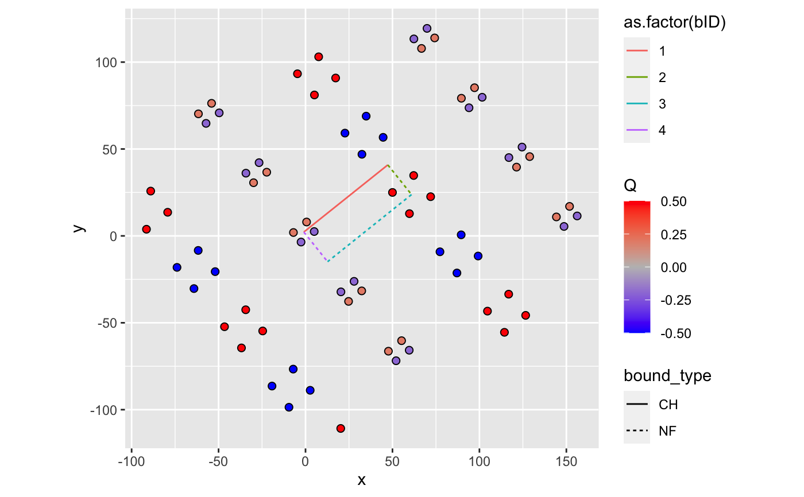

get_bounds_behavior.RdGet hydraulic head and flow on boundaries
get_bounds_behavior(wells, aquifer, length.out = 100)
| wells | wells object with each row containing rate Q [m^3/s], diam [m], radius of influence R [m], & coordinates x [m], y [m] |
|---|---|
| aquifer | Afuifer object containing aquifer_type, h0, Ksat, bounds, z0 (for confined case only) |
| length.out | The number of points to evaluate on each boundary |
Returns a data.frame, with length.out rows for each bID.
Each row represents a point along bID and contains the head and flow as:
dx = -Ksat * dh/dx, and
dy = -Ksat * dh/dy
# Example 1 wells <- define_wells(x=c(50,5),y=c(25,2.5),Q=c(0.5,-0.2),diam=c(0.05,0.08),R=100) bounds_df <- data.frame(bound_type=c("CH","NF","NF","NF"), m=c(0.8,-1.25,0.8,-1.25),b=c(3,100,-25,1), bID=as.numeric(1:4)) aquifer <- define_aquifer("unconfined",1e-4,h0=100,bounds=bounds_df) well_images <- generate_image_wells(wells,aquifer) library(ggplot2) ggplot() + geom_point(data=well_images,aes(x,y,fill=Q),color="black",size=2,shape=21) + scale_fill_gradient2(low="blue",high="red",mid="gray")+ geom_segment(data=aquifer$bounds,aes(x1,y1,xend=x2,yend=y2, linetype=bound_type,color=as.factor(bID))) + coord_equal()bound_behavior_im <- get_bounds_behavior(well_images,aquifer) bound_behavior_im$im <- "images" bound_behavior_no_im <- get_bounds_behavior(wells,aquifer) bound_behavior_no_im$im <- "no_images" # Example 2 bounds_df <- data.frame(bound_type=c("CH","NF","NF","NF"),m=c(Inf,0,Inf,0),b=c(0,1000,1000,0)) aquifer_unconfined <- define_aquifer("unconfined",1e-3,bounds=bounds_df,h0=100) library(dplyr)#> Warning: package ‘dplyr’ was built under R version 3.6.2#> #>#> #> #>#> #> #>set.seed(30) wells_df <- data.frame(x=runif(8,0,1000),y=runif(8,0,1000),diam=1,R=1000) %>% mutate(country=factor(y>500,levels=c(FALSE,TRUE),labels=c("A","B"))) %>% group_by(country) %>% mutate(weights=1,Q=-1/n()) %>% group_by() wells_actual <- define_wells(wells_df) wells <- wells_actual %>% generate_image_wells(aquifer_unconfined) bound_behavior_no_im <- get_bounds_behavior(wells_actual,aquifer_unconfined) %>% dplyr::mutate(im="unbounded") bound_behavior_im <- get_bounds_behavior(wells,aquifer_unconfined) %>% dplyr::mutate(im="bounded") bounds_behavior_summary <- bound_behavior_no_im %>% bind_rows(bound_behavior_im) %>% group_by(bID,bound_type,im) %>% summarize(`Head`=mean(head), `Flow`=mean(abs(flow_normal)))#>